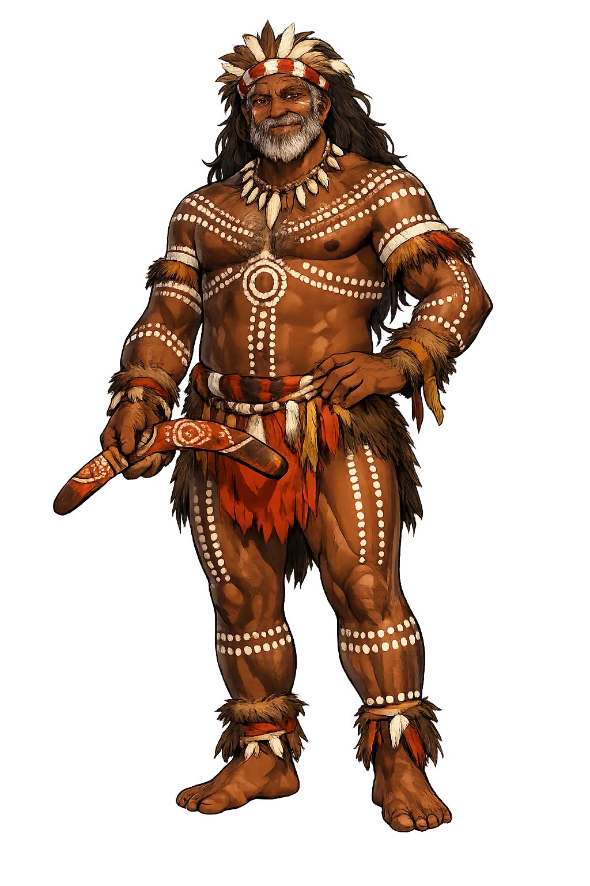
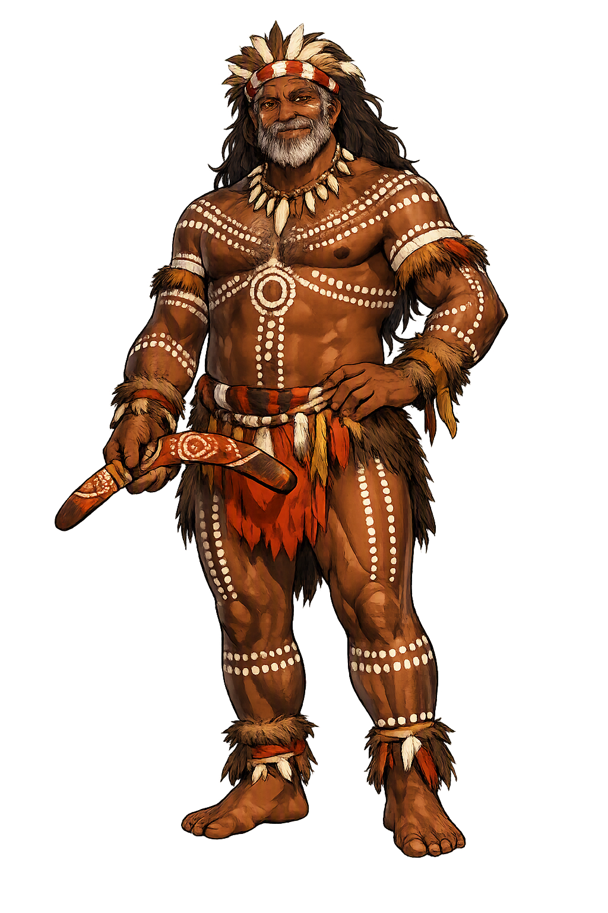

The Authentic Orthography
Sky Father, Creator · The eaglehawk father of southeast Australia

Unicode restoration and ASCII comparison
Baiame
The name survives in scholarly transliteration. Baiame is the standard Aboriginal romanisation, documented in academic sources — “The maker”. Because the spelling uses only Latin letters, the form is the same in both ASCII and Unicode.
No indigenous writing system is securely attested for individual aboriginal names. The form shown is a modern scholarly transliteration.
baiame
The plain baiame form is identical to the Unicode restoration. Because this name is already written in Latin letters, no diacritics, stress, or script information were lost — only capitalization differs.
Baiame
The Unicode restoration does not need to recover lost marks for Baiame. Its value is canonical spelling and consistent cataloguing, not the reconstruction of erased orthography. The domain is readable as-is to both DNS and humanity.
Baiame.com → baiame.com
The non-ASCII characters in Baiame are encoded while the ASCII remains visible. To the DNS, it is Punycode. To humanity, it is Baiame.
How Baiame is preserved in writing
No indigenous writing system is securely attested for individual aboriginal names. The form shown is a modern scholarly transliteration.
Contribute scholarly provenance →Owned, ideal, and ASCII forms of Baiame
Baiame
The full Unicode restoration. baiame.com is not in the PuniCodex collection — it is watched for release; if it drops, this temple upgrades to an owned flagship.
How Baiame was spoken
Creator, Law-Giver, and Ancestor
Baiame is the great creator and Sky Father of several Aboriginal nations of south-eastern Australia, above all the Wiradjuri and the Gamilaraay/Euahlayi. He made the land, the animals, and the people, and then gave them the laws, kinship systems, and initiation ceremonies by which they still live. After the work of creation he withdrew to the sky, where he remains as a remote but watchful ancestor, his presence felt in the Milky Way, in the flight of the emu, and in the sound of the bullroarer at initiation.
Baiame shaped the mountains, rivers, and plains, and made the first people and animals. Creation is not a single event but an ongoing relationship with country.
After creation Baiame returned to the sky. His camp is sometimes identified with the dark patches and stars of the Milky Way, especially the Emu in the Sky.
He gave the first laws, the kinship rules, and the initiation ceremonies that turn boys into men. The bullroarer is sounded in his name.
Baiame is not worshipped in the everyday sense; he is remembered as the founding ancestor whose actions set the moral and social order of the world.
Stories of Baiame
Baiame's mythology is preserved in the oral traditions of the Wiradjuri, Gamilaraay, and neighbouring nations. The stories are not free-floating entertainment: they are title deeds to country, instruction manuals for law, and maps of the sky. What follows are widely reported themes; local elders hold the authoritative versions of each nation's stories.
In the beginning Baiame shaped the land. He formed the hills and rivers, planted the trees, and made the animals. Then he made the first people and gave them their languages, their countries, and the laws by which they should live. Every mountain, waterhole, and plain became a reminder of his creative act, and every clan received the responsibility to care for the part of country made for them.
When the work of creation was finished, Baiame rose into the sky and made his camp there. From that distant place he watches over the world he made. The dark lanes of the Milky Way are said to be his camp or the tracks of the emu he placed there; the stars themselves are the campfires of the ancestors who went before.
Baiame's son Daramulum moves between earth and sky as a messenger and teacher. Often associated with the rainbow and with thunder, Daramulum taught the people the secrets of initiation and the songs that must be sung at each stage of life. Through him, Baiame's law is passed on without the Sky Father needing to descend himself.
The dark shape of the emu stretches across the Milky Way. It is both a constellation and a story: the emu in the sky tells the people when to collect emu eggs, when to hold ceremonies, and how to read the seasons. Baiame placed it there as a calendar and a memory, so that the connection between sky and country would never be lost.
Baiame asks the modern reader to think about creation as responsibility. The world is not a finished product handed to humanity; it is a country made by an ancestor and entrusted to his descendants. To speak the name Baiame is therefore to remember a covenant: the land, the water, the animals, and the sky are kin, and the law that governs them is older than any statute.
Enter Extended Lore